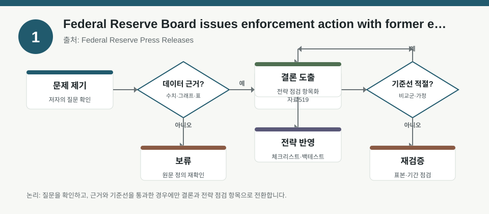
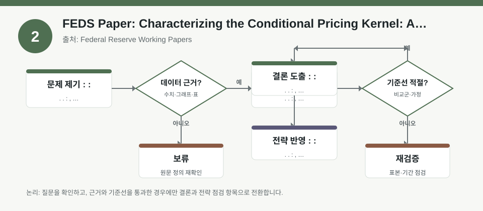
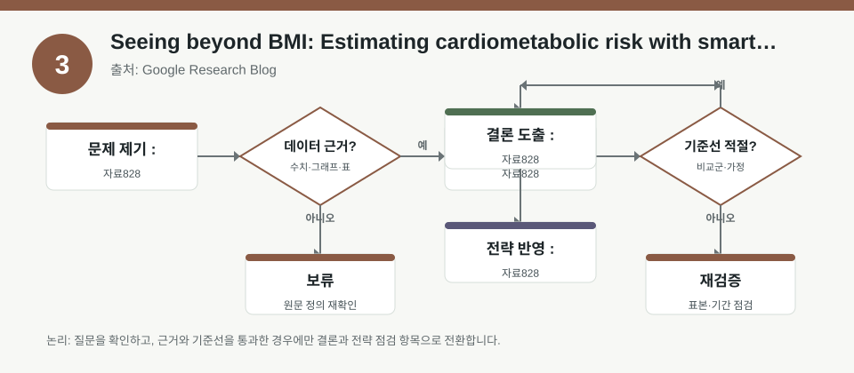

핵심 요약
- 결론: 미국 규제 이슈와 자산가격 상태의 시간가변성은 한국 투자자에게도 섹터·환율·금리 민감도 점검이 우선이라는 신호로 읽을 수 있습니다.
- 원칙: 수치가 메타데이터에 없는 경우 사실로 단정하지 말고, 원문에서 조건·표본·추정방법을 반드시 재확인해야 합니다.
주목할 자료
| 번호 | 자료 | 출처 | 원문 | 핵심 내용 | 데이터 포인트 | 리스크/한계 |
|---|---|---|---|---|---|---|
| 1 | Federal Reserve Board issues enforcement action with former employee of Banco Popular de Puerto Rico | Federal Reserve Press Releases | 원문 보기 | 감독·준법 이슈가 금융기관 신뢰와 규제 리스크 프리미엄에 연결될 수 있음을 보여줌 | 은행·금융주 규제 노출, 컴플라이언스 리스크, 신용·평판 충격 점검 | 개별 사건의 시장 파급은 원문에 제한적일 수 있어, 국내 비은행·은행주에 대한 직접 해석은 검증 필요 |
| 2 | FEDS Paper: Characterizing the Conditional Pricing Kernel: A New Approach | Federal Reserve Working Papers | 원문 보기 | 조건부 가격커널을 상태변수로 추정해 팩터 노출과 상태가격의 시간변화를 읽는 방법을 제시함 | VIX, term spread가 핵심 조건변수, 상태가격의 시계열 변동, 팩터 민감도와 리밸런싱 점검 | 추정치가 표본·상태변수 선택에 민감할 수 있어 한국 시장에 그대로 이식하기 전 재현성 검증 필요 |
| 3 | Seeing beyond BMI: Estimating cardiometabolic risk with smartphone imagery | Google Research Blog | 원문 보기 | 스마트폰 이미지로 대사질환 위험을 추정하는 AI 연구로, 비전 데이터 기반 위험 추정의 가능성과 한계를 시사함 | 이미지 기반 위험추정, 일반화 성능, 데이터 편향, 개인정보·검증 체계 점검 | 의료·AI 연구로서 금융 직접성과는 낮아, 시장 해석은 부차적이며 데이터 편향·윤리 이슈 확인 필요 |
자료별 상세
1. Federal Reserve Board issues enforcement action with former employee of Banco Popular de Puerto Rico

- 핵심: 감독 당국의 집행 조치는 개별 사건이라도 금융업 전반의 규제·컴플라이언스 민감도를 다시 확인하게 합니다.
- 데이터 포인트: 은행주·금융주에서는 신용위험보다도 운영위험, 평판위험, 규제비용 변화를 함께 보는 체크가 중요합니다.
- 리스크: 원문에서 제재 범위, 시점, 관련 기관의 노출 규모를 확인해야 하며 한국 금융사에의 전이 효과는 직접 사실로 단정할 수 없습니다.
- 투자전략 반영 예시: KOSPI 금융 섹터와 KOSDAQ 핀테크를 따로 나눠 규제 뉴스, 내부통제, 고객자산 분리, 해외사업 비중을 점검하는 목록으로 활용할 수 있습니다.
- 실행 예시: 분기별 체크리스트에 규제 이슈 건수, 소송·제재 공시, 해외 규제 익스포저, 감사 의견 변화를 추가해 백테스트용 이벤트 변수로 기록할 수 있습니다.
2. FEDS Paper: Characterizing the Conditional Pricing Kernel: A New Approach

- 핵심: 상태변수에 따라 가격커널이 달라진다는 관점은 “평균 팩터”보다 “국면별 팩터 노출”이 중요하다는 해석으로 이어집니다.
- 데이터 포인트: 메타데이터상 VIX와 term spread가 가장 정보력이 큰 변수로 제시되므로, 변동성·금리 스프레드를 국면 변수 후보로 점검할 수 있습니다.
- 리스크: 조건부 추정은 표본 기간, 변수 정의, 추정 방식에 따라 결과가 달라질 수 있어, 한국 시장에선 KOSPI·KOSDAQ 데이터로 재추정이 필요합니다.
- 투자전략 반영 예시: 한국 투자자는 성장주·가치주·고배당주·수출주를 국면별로 나눠 금리 상승기와 변동성 확대기에 민감도가 어떻게 달라지는지 점검할 수 있습니다.
- 실행 예시: 과거 KOSPI 수익률을 VIX 유사 지표, 미국-한국 금리차, 원달러 환율 구간으로 나눠 조건부 성과를 다시 계산해 팩터 로테이션 검증표를 만들 수 있습니다.
3. Seeing beyond BMI: Estimating cardiometabolic risk with smartphone imagery

- 핵심: 비전 AI는 이미지에서 기존 지표만으로는 보이지 않는 위험 신호를 추정할 수 있지만, 학습 데이터와 일반화 성능이 핵심입니다.
- 데이터 포인트: 이 자료는 금융 팩터보다 데이터 편향, 검증셋 분리, 외부 일반화, 개인정보 보호 같은 모델 리스크 관리 관점에서 읽는 것이 적절합니다.
- 리스크: 의료 도메인 연구이므로 시장 지표와 직접 연결하면 과해석이 될 수 있고, 표본 대표성·윤리 승인·재현성 확인이 필요합니다.
- 투자전략 반영 예시: KOSDAQ AI·헬스케어 기업을 볼 때도 “데이터 품질, 편향, 외부검증, 규제 리스크”를 체크리스트로 두는 방식으로 참고할 수 있습니다.
- 실행 예시: 모델 실험 기록표에 입력 데이터 출처, 학습·검증 분리, 외부 테스트 성능, 개인정보 처리 방식을 항목화해 기술주 리서치에 응용할 수 있습니다.
팩터·리스크·포트폴리오 관점
- 핵심: 이번 묶음은 규제 리스크, 상태의존적 팩터 노출, 데이터 편향이라는 서로 다른 축을 보여주며, 공통적으로 “무엇이 결과를 움직였는가”를 먼저 분해해야 합니다.
- 검수: 수치가 없는 자료는 정량 사실로 쓰지 말고, 변수 정의·표본 기간·추정법·이벤트 범위를 원문에서 확인한 뒤 포트폴리오 해석에 연결해야 합니다.
정리
- 결론: 한국 투자자 관점에서는 특정 종목의 방향성보다 섹터 익스포저, 환율·금리 민감도, 규제·모델 리스크를 함께 점검하는 프레임이 더 유효합니다.
- 다음 확인: 원문에서 상태변수 정의, 집행조치 범위, 데이터 검증 방법을 확인한 뒤 KOSPI/KOSDAQ에 맞는 재현 가능 지표로 바꿔보는 작업이 필요합니다.